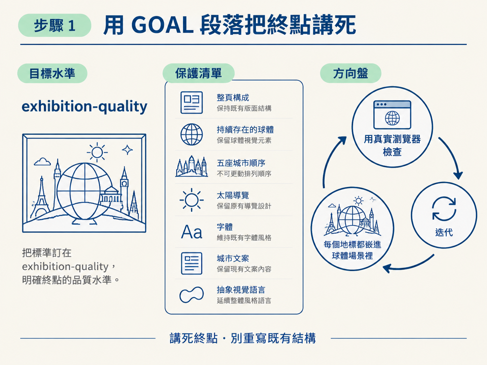
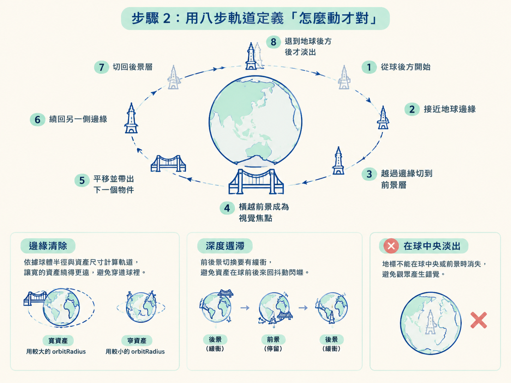
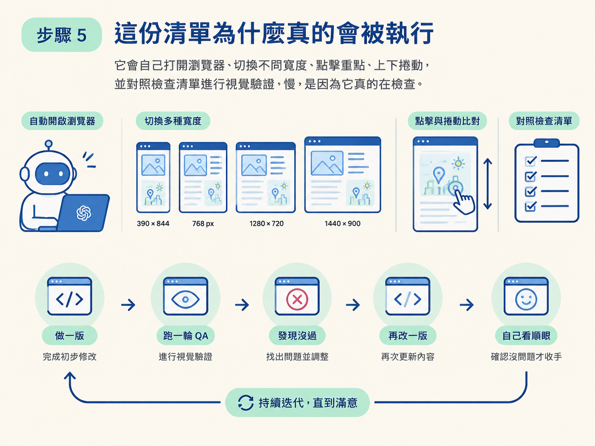

上一階段留下的版本「能跑」，但不能見人：sprites 還會在球的正中央淡出，轉場看起來歪歪的。這時候最常見的失敗不是模型不會改，而是你沒有把「做完」講清楚。於是你說「再順一點」，它改一版給你；你說「還是怪」，它再猜一次。來回五六輪，兩邊都很累。
這一節的做法是反過來：寫一則 polish 用的 goal，把「完成」定義成一份可以逐項打勾、可以重複執行的多 viewport 驗證清單。Codex 拿到之後不用猜你的標準，只要照著清單檢查、沒過就自己改，直到全部通過才停。
動手前需要兩件事：一個已經疊好資產、跑得起來的版本，以及你對 goal 機制本身的理解。這不是從零開始的課，是收尾的課。
做完之後，你手上會有一個在手機、平板、兩種桌機寬度下都實際看過、都通過檢查、動畫真的滑順的成品，而不只是「編譯有過」。這兩者的差距，就是這一節要補起來的。
goal 的第一段就是整個目標。它的任務有兩個：先定調「要達到什麼水準」，再點名「不能動到什麼」。
Take the sprite-enhanced “One Turning World” experience to a finished, exhibition-quality level. Preserve the existing full-page composition, persistent globe, five-city sequence, solar navigation, typography, city copy, and abstract visual language.
Continue iterating through real browser inspection until every landmark feels physically integrated into the globe-centered scene.第一句把標準訂在 exhibition-quality，順便把「已經做好的東西」列成保護清單，避免它為了變好看而重寫版面。第二句是整則 goal 的方向盤：不是「生成好看的東西」，而是「用真實的瀏覽器檢查一路迭代，直到每個地標都像真的嵌進球體場景裡」。
注意這裡把「怎麼算完成」和「用什麼方式驗證」綁在同一句話裡。後面所有的步驟，都是在把這句話拆成可執行的動作。

接著是核心規格：每個地標都不是「出現一下又消失」的貼圖，而是繞著地球轉的連續 3D 軌道物體。prompt 把它繞一圈的路徑拆成八個階段：
1. It begins small and genuinely behind the globe.
2. It approaches one outer limb of the Earth.
3. Its trajectory clears the globe before it changes to the foreground layer.
4. It crosses the foreground and becomes the visual focus.
5. It moves laterally and reveals the next object.
6. It returns around the opposite limb.
7. It changes back to the rear layer.
8. Its opacity softens only after it is safely hidden behind the Earth.這串軌道解的就是「球中央淡出」那個 bug。關鍵在第 8 步：只有在物件確實躲到地球後面之後，才可以讓它淡掉。前七步都在安排「它怎麼繞、何時切到前景、何時切回後景」，第八步才是真正修掉視覺破綻的那一步。
接著用一句禁令把這條規則釘死：
Do not use opacity crossfades as the primary transition. A landmark must never disappear while visibly centered over the globe or in the foreground.「不要用透明度互淡當主要轉場」＋「地標絕不能在球中央或前景時消失」，兩句一起講，模型就沒有走捷徑的空間。
另外它還補了兩個算法定細節：一是「邊緣清除」：用球體實際渲染的半徑和每個資產顯示的尺寸來算軌道，讓寬寬的大橋繞得比窄塔更遠，才不會穿進球裡；二是切層要用深度遲滯（depth hysteresis），也就是前後景的切換要有一點緩衝，避免資產在球前後來回抖動閃爍。

再來規定「任何時候只能出現當前城市的東西」，否則開羅的塔會在巴黎的段落裡陰魂不散：
- At any point, render only the active city’s landmarks and procedural root.
Before a new city becomes active, every landmark from the previous city must already be outside the visible composition or behind the globe. Assets from Cairo must never remain visible in Paris; Paris assets must never appear beside New York before the New York section begins.這種「指名道姓」的寫法看起來囉嗦，但它把一個容易漏掉的邊界情況（跨城市洩漏）變成可以被檢查的條件，而不是留給模型自行判斷。後面的驗證迴圈就能直接照著這條去點收。
最後是整則 goal 最有份量的部分：VALIDATION LOOP。它先用一句話堵住「build 過了就交差」這條偷懶的路：
Do not stop after a successful build.然後把「要看什麼、在哪些尺寸看」全部列死：
Validate at minimum:
- 390 × 844
- 768px tablet width
- 1280 × 720
- 1440 × 900
For every viewport:
- Check that the globe is fully visible.
- Check rear-to-front and front-to-rear sprite transitions.
- Check that no sprite fades over the center of the globe.
- Check that inactive-city assets are absent.
- Click every globe marker and every solar city dot.
- Check sunrise, zenith, and sunset alignment.
- Check reduced-motion behavior and keyboard focus.
- Inspect browser console errors and warnings.
- Run the production build and diff checks.逐項看下去就會發現，這份清單其實是把前面幾節的要求全部收攏：球不能被裁切、資產要走前後轉場、不能在球中央淡出、非當前城市的資產不能出現、每個城市標記與太陽圓點都要點得動、日出與日落要對位、reduced-motion 與鍵盤焦點要正常、console 不能有錯誤、production build 要過。
再加上「每個城市都要看開頭、中間、結尾，再看進到下一座城市的轉場，並且往前捲與往回捲都要測」，就確保它真的走完整條路徑，而不是只看一眼截圖就交卷。
你可能會懷疑：列了這麼多，Codex 真的會照做嗎？會。關鍵就在清單最後那條「用眼睛看、不要只看編譯」：它把「驗證」變成任務本身的一部分，而不是任務結束後的附帶動作。
實跑的時候，你會看到它自己開瀏覽器、在好幾個寬度之間來回切、點圓點、捲上捲下。光是這輪視覺 QA 就可能花掉十幾分鐘。它會先做一版、跑一輪 QA、發現沒過就又改一版，直到它自己看順眼才收手。
這正是 polish 階段感覺「很慢」的原因。慢的其實不是它卡住，而是它真的在檢查。

還有一點要講清楚：goal 的價值不是讓你完全放手。如果中途發現它往錯的方向走，你隨時可以送一則新 prompt 把它拉回來。goal 讓它做的是「在你定義的標準上持續自我檢查與迭代」，不是「拿走你的判斷權」。
跑完這則 goal，你要能指出三件可驗證的事：第一，四個 viewport 都實際被檢查過，不是只有本機那個視窗；第二，動畫滑順，地標像真的繞著地球轉，沒有在球中央憑空消失；第三，城市與城市之間乾乾淨淨，上一座城市的資產不會殘留下一座。再加上 console 無錯誤、production build 通過，這個版本才配叫「可以出展」。
polish goal 的骨架是四段：GOAL 段落定出終點與不能動的部分；八步軌道加上「不要在球中央淡出」的禁令修好運動；CITY OWNERSHIP 堵住城市串場；VALIDATION LOOP 收尾，明確列出每個 viewport 尺寸與逐項檢查，並寫明「build 過了不算完成」。把「完成」定義成一份可重複執行的檢查清單，Codex 才會真的自我迭代到合格。
走完這三步，你手上已經有一套完整流程：大體驗怎麼切階段、長 prompt 怎麼寫、goal 怎麼開與怎麼驗收。這個節點到此結束。下一個節點換個主題：當這種複雜體驗真的壞掉時，怎麼用瀏覽器與 CDP 跑出「重現 → 診斷 → 修 → 驗證」的除錯迴圈。